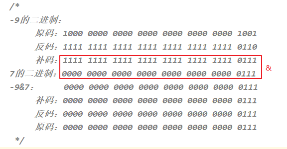

位运算符
| 位运算符 | 运算规则 |
|---|---|
| & | 按位与，同为1则为1,否则为0 |
| | | 按位或，只要有一个为1则为1,否则为0 |
| ~ | 按位取反，将操作数的每个位（包括符号位）全部取反 |
| ^ | 按位异或,相同时返回0，不同时返回1 |
| << | 左移运算符 |
| >> | 右移运算符 |
| >>> | 无符号右移运算符 |
- 位运算是将数字转换成为二进制然后再进行运算，它的运算过程都是基于补码的。
思考：如何区分&,|,^是逻辑运算符还是位运算符？
如果操作数是boolean类型，就是逻辑运算符，如果操作数是整数，那么就位运算符。
左移：<<
运算规则：左移几位就相当于乘以2的几次方
注意：当左移的位数n超过该数据类型的总位数时，相当于左移（n-总位数）位
3<<4 类似于 3*2的4次= 3*16 = 48
-3<<4 类似于 -3*2的4次= -3*16 = -48

右移：>>
快速运算：类似于除以2的n次，如果不能整除，向下取整
69>>4 类似于 69/2的4次 = 69/16 =4

-69>>4 类似于 -69/2的4次 = -69/16 = -5

无符号右移：>>>
运算规则：往右移动后，左边空出来的位直接补0，不看符号位
正数：和右移一样
负数：右边移出去几位，左边补几个0，结果变为正数
69>>>4 类似于 69/2的4次 = 69/16 =4

-69>>>4 结果：268435451

按位与：&
运算规则：对应位都是1才为1
1 & 1 结果为1
1 & 0 结果为0
0 & 1 结果为0
0 & 0 结果为0
9&7 = 1

-9&7 = 7

按位或：|
运算规则：对应位只要有1即为1
1 | 1 结果为1
1 | 0 结果为1
0 | 1 结果为1
0 & 0 结果为0
9|7 结果： 15

-9|7 结果： -9

按位异或：^
运算规则：对应位一个为1一个为0，才为1
1 ^ 1 结果为0
1 ^ 0 结果为1
0 ^ 1 结果为1
0 ^ 0 结果为0
9^7 结果为14

-9^7 结果为-16

按位取反
运算规则：~0就是1
~1就是0
~9 结果：-10

~-9 结果：8

人类能够感知到的颜色几乎都是由红绿蓝(RGB)三种颜色调和而成的，在计算机里使用0~255的十六进制来表示颜色。例如 0xFF0000，0x00FF00，0x0000FF分别表示纯红，纯绿和纯蓝色。
思考: 已知颜色 int color = 0x4f683a; 使用代码分别获取代码里的RGB值。